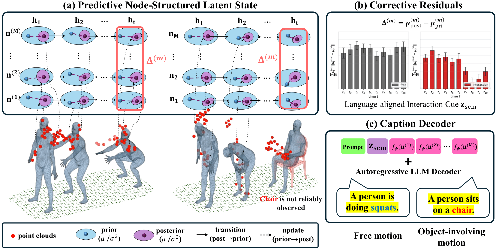
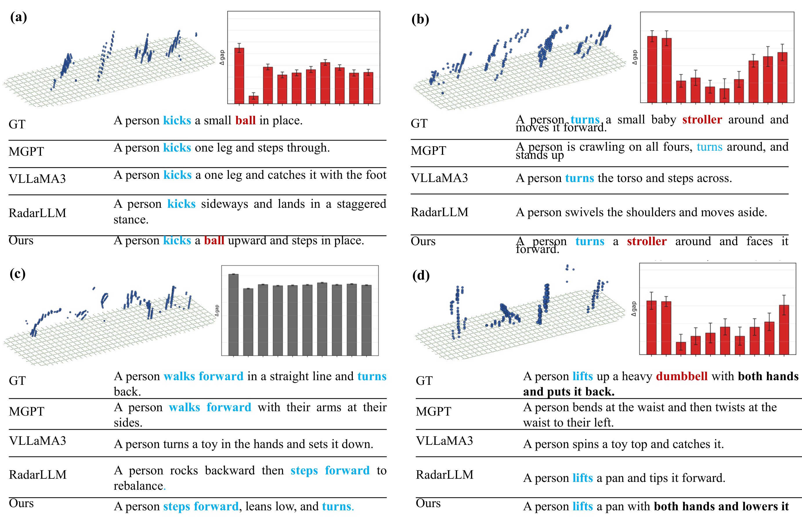

TL;DR: HIRaD infers hidden human-object interaction semantics from sparse mmWave radar by modeling observation-driven corrections to predicted body motion, without directly detecting objects.
Abstract
Millimeter-wave radar point clouds provide a visually privacy-preserving representation for human motion analysis, but object-related interactions remain difficult to describe because the object evidence that defines the interaction is not always separable or consistently observable in sparse radar returns. We address this problem without direct object detection. Instead, we infer hidden interaction semantics from the temporal structure of observation-conditioned corrections to predicted body motion, motivated by the view that object affordances shape how the body moves. To this end, we propose HIRaD, a radar semantic sensing framework that organizes sparse radar returns into a predictive node-structured latent state of local motion carriers. It represents interaction-relevant cues as corrective residual trajectories between a motion-continuation prior and an observation-conditioned posterior, and compresses these trajectories into a language-aligned semantic bottleneck. A structured prefix conditions a frozen autoregressive language model on both the semantic bottleneck and node-level motion summaries, separating compact interaction-level cues from node-level motion evidence. Experiments show that our proposed method improves radar captioning and interaction understanding under weak object observability over strong baselines, while ablations validate the importance of radar-conditioned prefixing, latent state representation, and residual trajectory modeling.
Contributions
- We formulate hidden interaction inference in radar as a constraint-modulated predictive dynamics problem, where object-related cues are inferred from changes in the predictability and temporal structure of body-centric motion.
- We introduce a predictive node-structured latent state that provides temporally persistent local motion nodes for modeling node-wise predictive update patterns.
- We propose a semantic bottleneck and structured output interface that combine compact residual-derived cues with node-level motion evidence for language-based interaction description.
Method
Given a sequence of sparse mmWave radar point clouds, HIRaD infers object-related interaction semantics from body-motion evidence and expresses them as a natural-language description. Rather than attempting to detect or reconstruct the object itself, it uses a predictive body-centric representation to separate expected motion continuation from observation-conditioned updates. The method proceeds in three stages. First, it organizes sparse radar returns into a predictive node-structured latent state whose nodes serve as temporally persistent local motion carriers. Second, it computes observation-supported corrective residuals between a motion-continuation prior and an observation-conditioned posterior. Third, it encodes node-wise residual histories, selects informative nodes using confidence and residual statistics, and compresses the result into a compact semantic token for caption generation.

Predictive node-structured latent state
Radar points are routed to a small set of latent nodes by masked multi-head routing attention. These nodes are not supervised anatomical landmarks. They are latent motion carriers encouraged by routing and temporal persistence to capture local motion patterns over time. A temporal transition model predicts how each node should evolve from past posterior states only, producing a motion-continuation prior before the current frame is seen. The current radar evidence then updates this prior through a confidence-aware posterior update, where a routing-derived gate controls how strongly each node is revised.
Hidden interaction as corrective residuals
The corrective residual of a node is the difference between its posterior and prior means. Because the prior is computed before the current frame is accessed, this residual reflects an observation-driven update to predicted motion rather than a re-encoding of the current point cloud. A large residual can also arise from fast free motion, landing, or radar sparsity, so the residual is never used as a standalone interaction score. Instead, residual histories are encoded over time and combined with node confidence and motion summaries before caption generation.
Language-aligned semantic bottleneck
Each node's residual history is encoded by a shared temporal convolutional encoder. Node-level attention, conditioned on both the residual code and observation-support statistics, selects informative nodes, and the selected code is fused with a global radar summary and projected into a normalized language-aligned embedding. This bottleneck is trained with a contrastive alignment loss against caption-level language embeddings.
Structured prefix for a frozen language model
A frozen decoder-only language model (Qwen3-8B with QLoRA adapters) is conditioned through a structured prefix that contains a task prompt, one semantic token derived from the bottleneck, and node tokens projected from node-level motion summaries. The semantic token carries the interaction-level summary, while node tokens retain motion grounding. Node tokens are randomly dropped during training so that the decoder cannot rely on fine-grained motion tokens alone.
Results
We evaluate end-to-end radar captioning on a synthetic radar–caption corpus of 10,000 clips and on a real benchmark of 420 radar clips (180 directly collected clips with physical objects and 240 object-absent clips from mRI). No real clip is used for training or model selection. HIRaD is compared against radar-driven (RD), skeleton-driven (SD), and video-driven (VD) baselines under a standardized two-stage protocol in which all captioning baselines are fine-tuned on the same training split and share the same frozen Qwen3-8B decoder. On synthetic data HIRaD improves CIDEr from 4.3 to 7.2 over RadarLLM, and on real data from 2.2 to 4.8, while also obtaining the highest SPICE, object sub-score, and object-presence balanced accuracy.
| Synthetic captioning | Real captioning | |||||||
|---|---|---|---|---|---|---|---|---|
| Method | CIDEr | METEOR | R-1 | B-1 | CIDEr | METEOR | R-1 | B-1 |
| MotionGPT (SD) | 3.8 | 16.1 | 42.8 | 41.3 | 1.2 | 12.7 | 28.3 | 27.7 |
| AvatarGPT (SD) | 3.9 | 16.6 | 43.1 | 42.5 | 1.1 | 13.4 | 29.2 | 31.7 |
| Video-LLaMA3 (VD) | 3.3 | 15.6 | 40.8 | 38.8 | 0.9 | 11.6 | 37.4 | 32.7 |
| Video-LLaVA (VD) | 3.1 | 15.4 | 41.1 | 36.6 | 0.7 | 11.2 | 30.2 | 30.6 |
| Qwen2.5-VL (VD) | 2.1 | 14.6 | 37.7 | 35.4 | 1.3 | 13.4 | 33.7 | 31.5 |
| InternVL-2.5 (VD) | 2.2 | 15.5 | 40.8 | 36.6 | 0.3 | 11.0 | 24.1 | 19.6 |
| RadarLLM (RD) | 4.3 | 16.4 | 42.7 | 42.4 | 2.2 | 13.8 | 35.4 | 33.5 |
| HIRaD (ours) | 7.2 | 18.5 | 43.8 | 45.5 | 4.8 | 16.5 | 41.1 | 35.9 |
| Synthetic interaction | Real interaction | |||||
|---|---|---|---|---|---|---|
| Method | SPICE | Obj | BAcc | SPICE | Obj | BAcc |
| MotionGPT (SD) | 24.0 | 16.8 | 58.7 | 18.2 | 16.2 | 53.1 |
| AvatarGPT (SD) | 30.5 | 28.3 | 72.0 | 22.3 | 20.8 | 63.4 |
| Video-LLaMA3 (VD) | 18.2 | 16.0 | 56.6 | 19.4 | 17.1 | 49.1 |
| Video-LLaVA (VD) | 17.1 | 14.6 | 62.2 | 14.1 | 13.1 | 46.1 |
| Qwen2.5-VL (VD) | 17.7 | 16.6 | 53.1 | 13.8 | 12.7 | 43.7 |
| InternVL-2.5 (VD) | 12.6 | 12.6 | 54.3 | 12.9 | 14.6 | 42.4 |
| RadarLLM (RD) | 33.5 | 31.2 | 62.5 | 20.3 | 19.1 | 58.9 |
| HIRaD (ours) | 41.7 | 40.4 | 72.9 | 29.9 | 27.6 | 65.3 |
| Variant | Prefix | Codebook | Latent | Residual | Motion | CIDEr | SPICE | Obj |
|---|---|---|---|---|---|---|---|---|
| (1) No radar prefix | ✗ | ✗ | ✗ | ✗ | ✗ | 0.8 | 13.3 | 11.5 |
| (2) Codebook encoder | ✓ | ✓ | ✗ | ✗ | ✓ | 4.3 | 33.5 | 31.2 |
| (3) w/o motion supervision | ✓ | ✗ | ✓ | ✓ | ✗ | 4.9 | 37.9 | 36.2 |
| (4) w/o residual trajectory | ✓ | ✗ | ✓ | ✗ | ✓ | 6.0 | 38.5 | 37.4 |
| (5) Full (ours) | ✓ | ✗ | ✓ | ✓ | ✓ | 7.2 | 41.7 | 40.4 |
Qualitative examples
HIRaD often recovers object-involving interactions from body-motion dynamics even when object evidence in the radar point cloud is weak, intermittent, or absent. Object-involving motions show clearly different residual trajectories from free motion. Fine-grained object identity remains challenging, especially when different objects induce similar motions.

BibTeX
@inproceedings{lee2026hirad,
title = {{HIRaD}: Hidden Interaction Inference from Predictive Radar Dynamics},
author = {Lee, Jaekwon and Lee, Jaekoo},
booktitle = {Advances in Neural Information Processing Systems},
year = {2026}
}